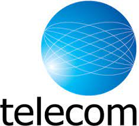

♦ Corporate and Academic Wide Area Networks (WANs)
♦ Telephone Networks
♦ Cellular Networks
♦ Police and Fire Communications Systems
♦ Taxi Dispatch Networks
♦ Groups Of Amateur (HAM) Radio Operators
♦ Broadcast Networks
Data is transmitted in a telecommunications circuit by means of an electrical signal called the carrier or the carrier wave. In order for a carrier to convey information, some form of modulation is required. The mode of modulation can be categorized broadly as analog or digital.